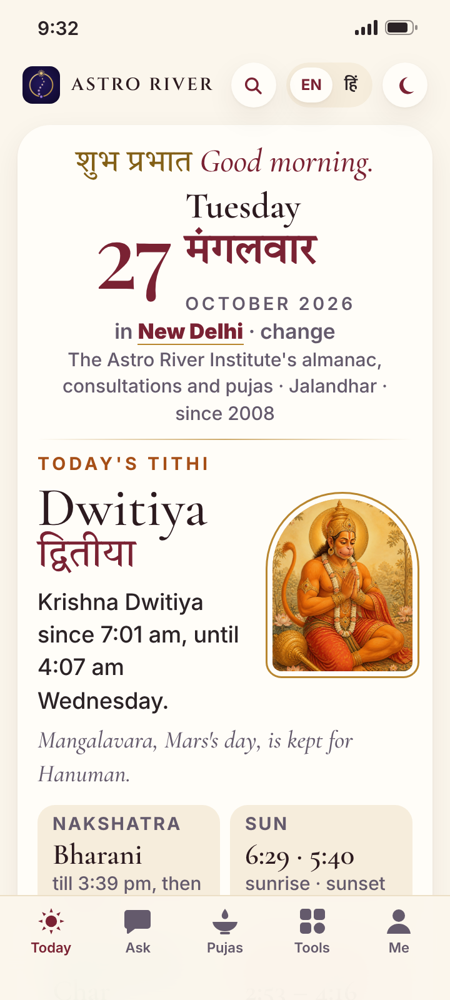
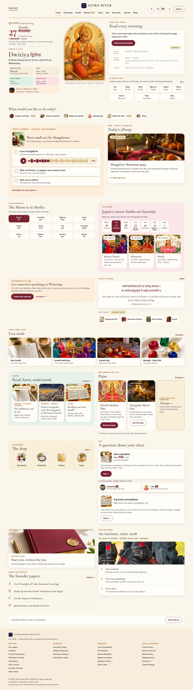
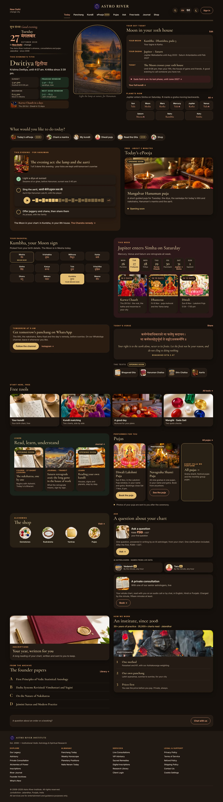

Home, round 4: your sky, the planets, the remedy, four times of day
Tuesday 27 October 2026 · New Delhi · real panchang and planets from astroriver.com/panchang and /planetary-positions (Lahiri). Round 3.1 tokens and Night A; light by day, Night A from sunset. "With details" uses an example chart (lagna Karka, Moon Kumbha in Dhanishta), filled in the build by the site's own kundli engine. Checked at phone 390 and 360, desktop 1440, four times of day, with and without details, normal and large text: AA contrast, 44 px taps, every colour a token, no sideways scroll, every link a live route or marked Soon (audit/report.json: 48 runs, 0 issues).
360 · large text (130%) · morning

Logo tile · founder's pick
Navy (current) and warm maroon, side by side. The crest is unchanged.
Navy

Whole page · morning · light · no details
Whole page · morning · light · with details
Whole page · evening · Night A · with details
Desktop 1440 · morning · light (same sections)

Desktop 1440 · evening · Night A · with details
